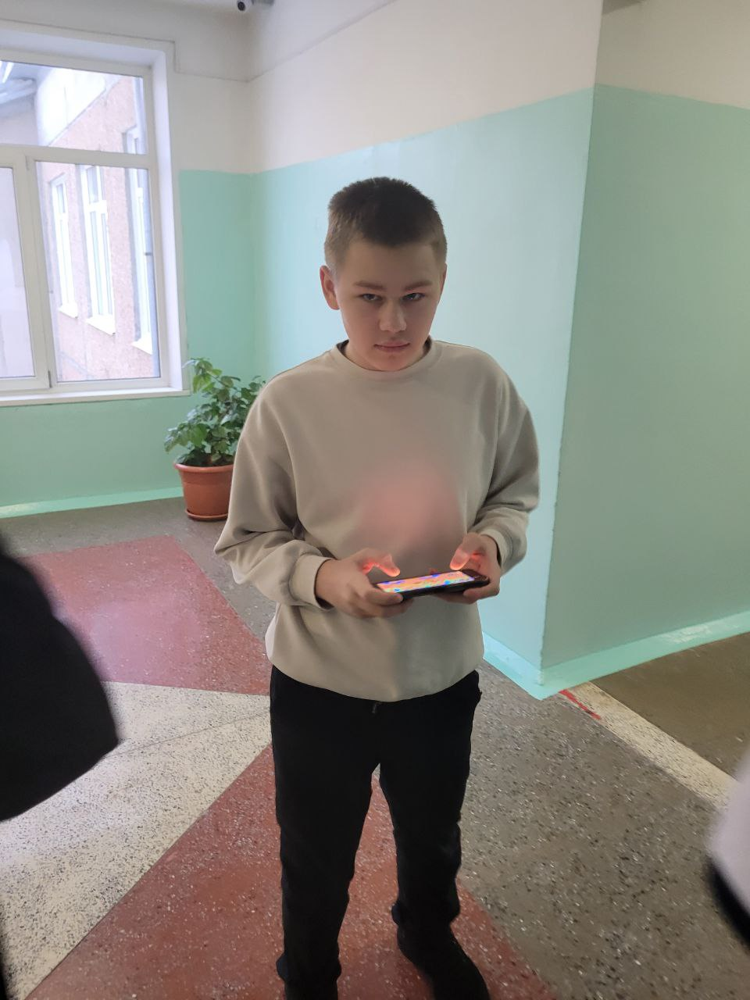
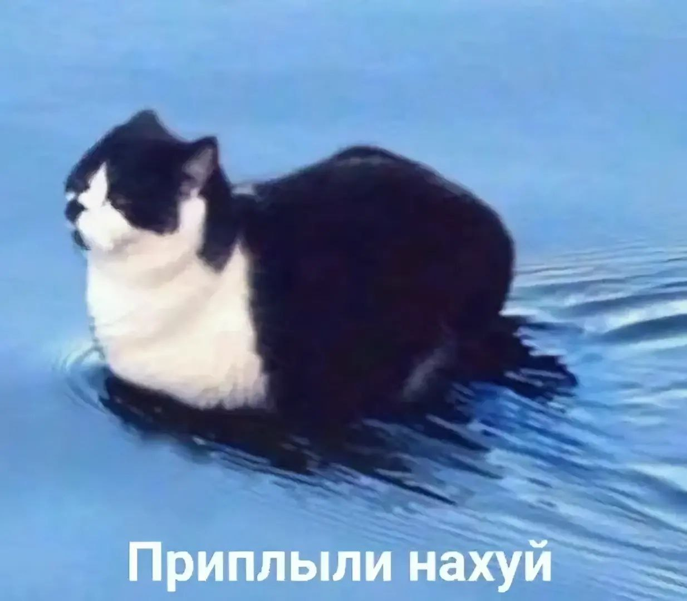

кто такой кених? Кених Дмитрий – существо из тьмы, с кожей, словно полированный, чёрный мрамор. Его глаза – два горящих уголька, которые пронзают насквозь. Длинные, когтистые пальцы сжимают что-то, что кажется… скорченными останками. Он движется бесшумно, как тень, и его дыхание – это завывание ветра в развалинах.
Раньше кених был не один, он был с Таней Филатовой, но она его бросила и сейчас он ходит только с телефоном. Есть теория, что это именно телефон его зомбировал и превратил его в мон-стра.
 13 марта 2025 года ворвался к Приписнову в квартиру. пока хозяйн был отвлечен, кених легким движением руки взял мандарин и с особой жестокостью швырнул его об стену, оставив кровавый мандариновый след. Также он вынес входную дверь и скрылся с места преступления.